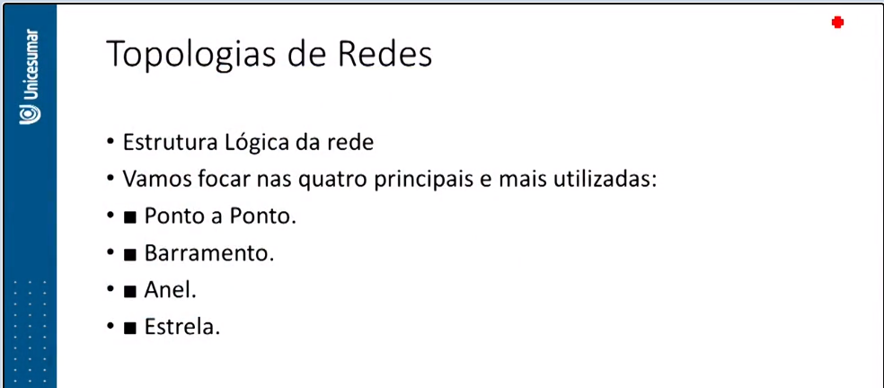
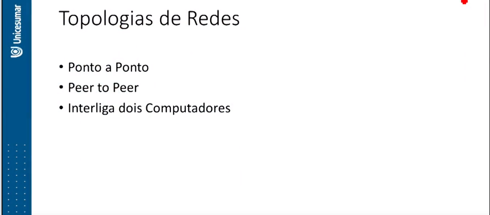
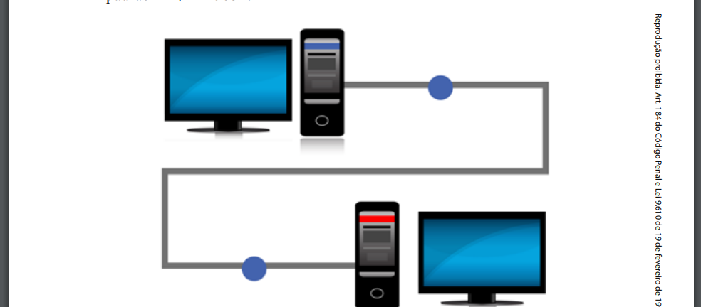
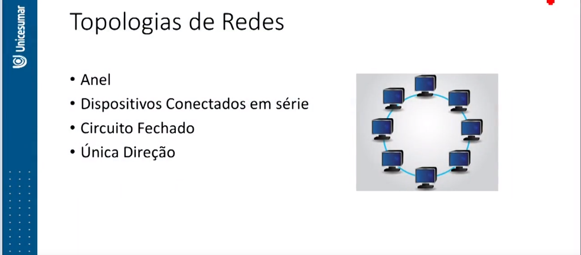
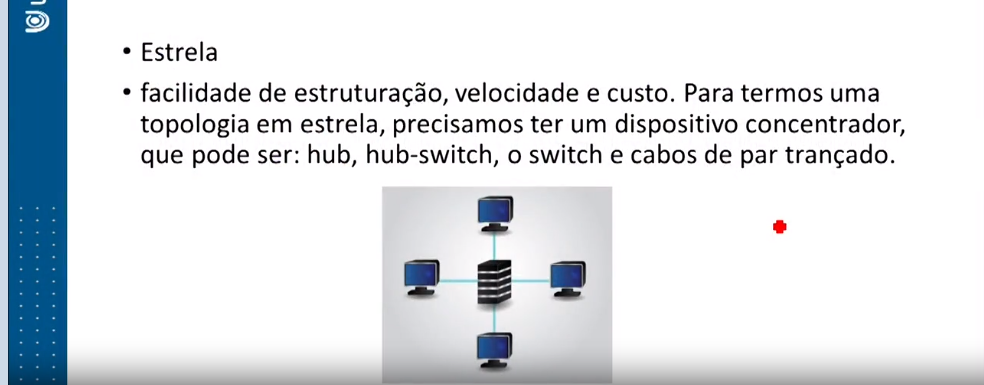
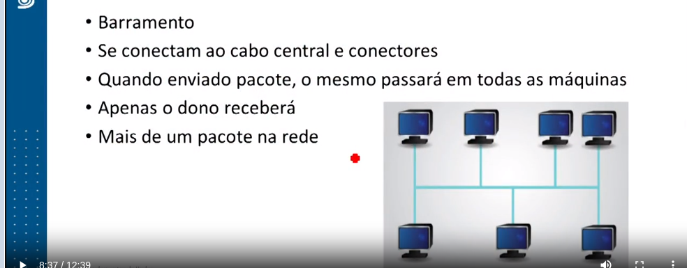

Plano de Estudo
A seguir, apresentam-se os tópicos que você estudará nesta unidade:
- Aplicações das Redes de Computadores
- Tipos de Redes de Computadores
- Hardware e Software de Rede
- Meios de Transmissão
- Topologias de Redes
Topologias de Redes
No tópico anterior, estudamos os meios de transmissão. Agora, abordaremos a estrutura física e lógica da rede, ou seja, como a rede ficará disposta. A topologia de rede descreve fisicamente e logicamente como as redes são desenhadas, mostrando como e onde cada ponto de rede estará disposto.
A topologia física é o desenho físico da rede, enquanto a lógica descreve o fluxo de dados através da rede.
Ao longo dos anos, várias topologias foram criadas, totalizando 7 no conjunto. Vamos focar nas quatro principais e mais utilizadas:
- Ponto a Ponto: Esta topologia envolve uma conexão direta entre dois dispositivos, como uma ponte. É simples e eficiente para conexões diretas.
- Barramento: Nesta topologia, todos os dispositivos compartilham o mesmo cabo de comunicação. É mais simples de implementar, mas pode sofrer com colisões de dados.
- Anel: Os dispositivos são conectados em um anel fechado, onde os dados circulam em uma única direção. É resiliente e eficiente, mas pode ser difícil de expandir.
- Estrela: Cada dispositivo se conecta a um ponto central, como um hub ou switch. É fácil de gerenciar e expandir, mas depende da disponibilidade do ponto central.
Topologia de Rede Ponto a Ponto
Uma conexão ponto a ponto, também conhecida como Peer to Peer, interliga apenas dois computadores utilizando um cabo especial chamado Cross-over. Essa é a forma mais econômica de conectar duas máquinas, exigindo apenas um cabo par trançado de categoria 5 e dois conectores RJ45.
O cabo crossover deve ter uma extremidade no padrão EIA/TIA 568A e a outra no padrão EIA/TIA 568B.
Topologia Anel
A Topologia Anel, introduzida pela IBM, envolve a conexão em série de dispositivos, formando um circuito fechado em forma de anel. Os dados são transmitidos em uma única direção, percorrendo todos os nós da rede até atingir seu destino. Em caso de problemas, a rede pode usar anéis múltiplos para aumentar a confiabilidade e o desempenho, permitindo a retransmissão de pacotes por outro caminho.
Topologia Estrela
A topologia em estrela é amplamente utilizada devido à sua facilidade de configuração, alta velocidade e custo acessível. Para implementar uma topologia em estrela, é necessário um dispositivo concentrador, que pode ser um hub, hub-switch, switch ou cabos de par trançado.
Nesta topologia, todos os dispositivos estão conectados ao concentrador central. Se um dispositivo falhar, apenas esse dispositivo ficará desconectado da rede, enquanto o restante da rede continuará funcionando normalmente. Além disso, é fácil adicionar novos terminais à rede, desde que haja portas disponíveis.
No entanto, uma desvantagem é que se o concentrador central apresentar problemas, toda a rede ficará inoperante.
Topologia Barramento
A topologia de barramento foi a primeira a ser utilizada em redes. Nessa topologia, todos os computadores se conectam a um cabo central por meio de conectores do tipo T e conectores do tipo BNC, que são conectados às placas de rede dos computadores.
Quando um pacote de dados é enviado, ele percorre todo o cabo e passa por todas as máquinas. No entanto, apenas o destinatário do pacote aceita e processa os dados, enquanto as outras máquinas permanecem em escuta. Isso significa que apenas um pacote pode ser transmitido pela rede de cada vez. Se houver mais de um pacote na rede, a transmissão deve recomeçar do início.
Considerações Finais
Nesta primeira unidade do livro, exploramos os principais fundamentos que constituem uma rede de computadores, desde seu surgimento até os dias atuais. Aprendemos sobre a importância das redes de computadores em nossas residências e empresas, bem como os benefícios do compartilhamento de recursos e dispositivos em uma rede.
Discutimos os tipos de redes de computadores, incluindo a Internet, a intranet e a extranet, e como cada uma delas desempenha um papel vital em diferentes cenários. Abordamos os serviços oferecidos por essas redes, sua evolução ao longo do tempo e suas classificações, como LAN, MAN, WAN e redes sem fio.
No decorrer de nossa unidade, exploramos o padrão Ethernet, que padroniza a comunicação física e lógica em redes. Analisamos os dispositivos de rede, como placas de rede, hubs, hub-switches e switches, entendendo suas diferenças e aplicações.
Além disso, examinamos as mídias de transmissão, ou seja, os tipos de cabos utilizados em redes, compreendendo sua evolução ao longo do tempo e suas aplicações adequadas.
Encerramos esta unidade explorando as topologias de redes, combinadas com as mídias de transmissão, proporcionando uma compreensão abrangente das redes de computadores.
Na próxima unidade, continuaremos nossos estudos ao explorar os protocolos de comunicação, o Modelo OSI e o modelo TCP/IP. Convidamos você a continuar conosco nesta jornada de aprendizado!
Fazer simulado referente ao tópico 2